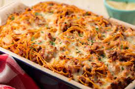

Baked Spaghetti

Description
Easy baked spaghetti recipe that you can pre make and bake when ready.
Ingredients
- 1 package spaghetti noodles
- 1 lb ground beef
- chopped green pepper and onion
- 1 can diced tomato
- 1 can cream of mushroom
- 1/4 cup water
- 1 can mushroom
- 1 tsp oregano
- 2 cup shredded cheddar
- 1/2 cup Parmasan
Steps
- Boil water and cook noodles
- Cook ground beef, onions, peppers, mushroom. Combine tomato and oregano with ground beef. Simmer 10 min.
- Layer noodles, meat mixture, cheddar. Repeat. Combine soup and water, pour over casserole. Top with parmesan
- Bake 40 minutes at 350 degree F, let stand 15 minutes